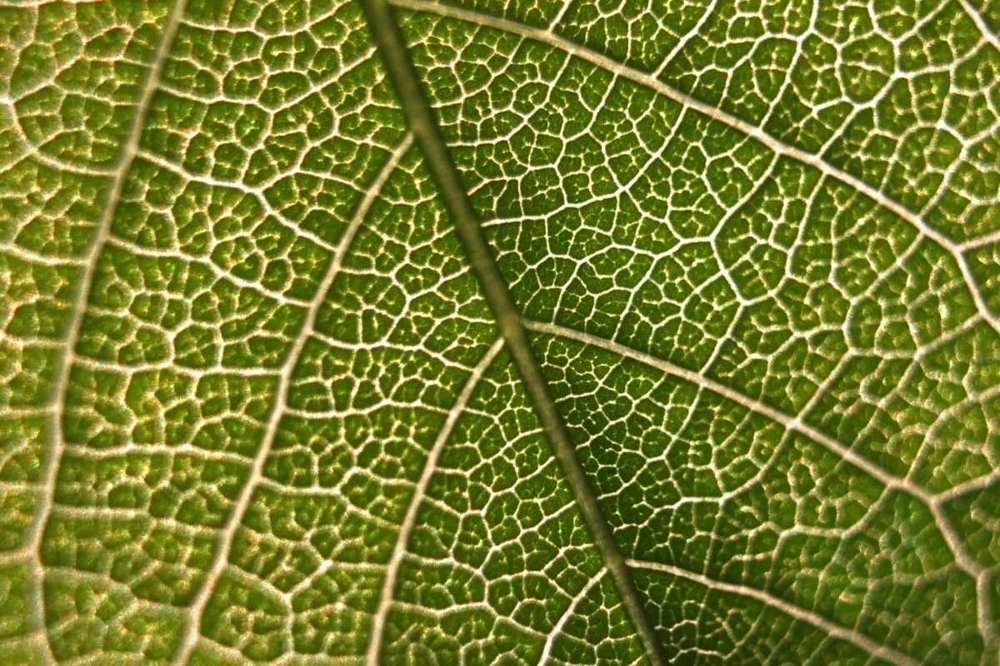
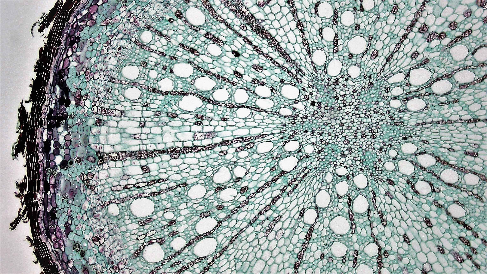
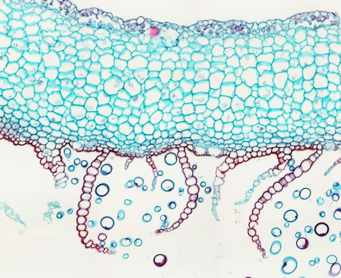
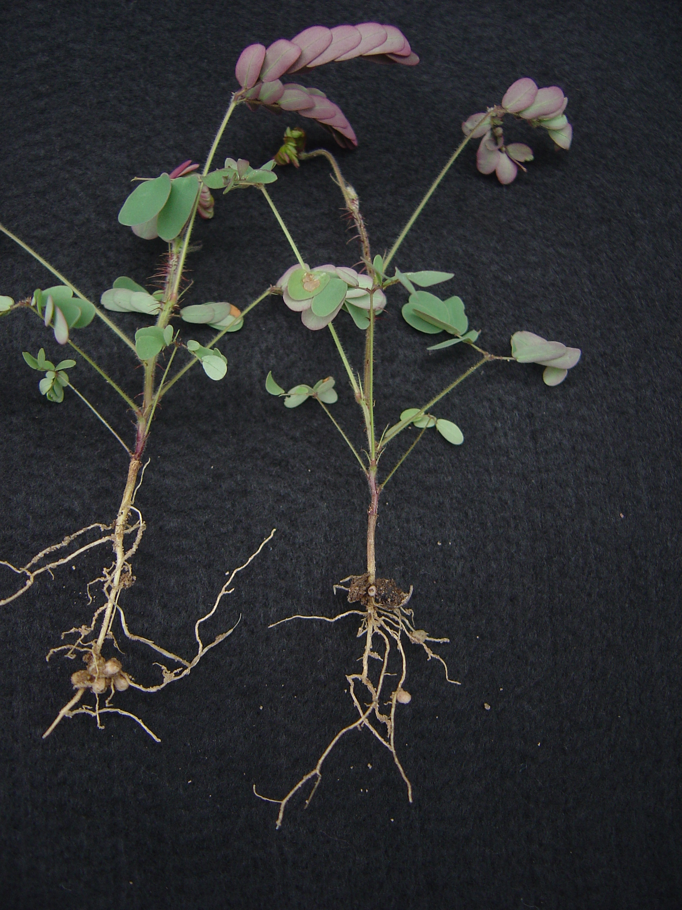
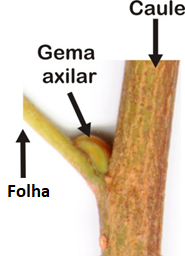

1 Corpo Vegetal
1.1 Organismo vegetal
- As plantas são organismos eucariontes, pluricelulares e autotróficos.

- O organismo vegetal é um ser corpóreo imóvel.
- O corpo vegetal pode ser formado por tecidos diferenciados ou indiferenciados.

- Denomina-se talo, o corpo do vegetal que possui tecidos indiferenciados, não se constituindo em órgãos.

- Os órgãos básicos das plantas são a raiz, o caule e a folha.
 Mimosa echinocaula Foto: Marcelo F Simon
- O corpo das Embriófitas apresenta duas gerações: o gametófito e o esporófito.
1.2 Níveis de organização
- O corpo vegetal das Embriófitas é estruturalmente organizado em três níveis de organização:
- Celular
- Tecidual
- Sistêmico
- Cada nível apresenta propriedades emergentes
1.3 O eixo caule-raiz
A polaridade é um componente-chave da formação do padrão biológico. As raízes se formam na extremidade inferior do ramo e as folhas e as gemas, na extremidade superior. Raven, Evert, e Eichhorn (2014)
A polaridade geral do eixo caule-raiz de uma planta é estabelecida durante a embriogênese e é atribuída ao transporte polar ou unidirecional do hormônio auxina na planta. A auxina é o único hormônio vegetal conhecido que apresenta transporte polar Raven, Evert, e Eichhorn (2014).
O estabelecimento da polaridade é a primeira etapa essencial no desenvolvimento de todos os organismos superiores, pois ele fixa o eixo estrutural do corpo vegetativo, a “espinha dorsal” sobre a qual os apêndices laterais estarão dispostos Raven, Evert, e Eichhorn (2014).
O sistema caulinar e radicular
1.3.1 Sistema caulinar
- O sistema caulinar é um sistema contínuo de tecidos (epidérmico, fundamental, vascular)
- As folhas são caules modificados.
- Na axila de toda folha há uma gema axilar.
